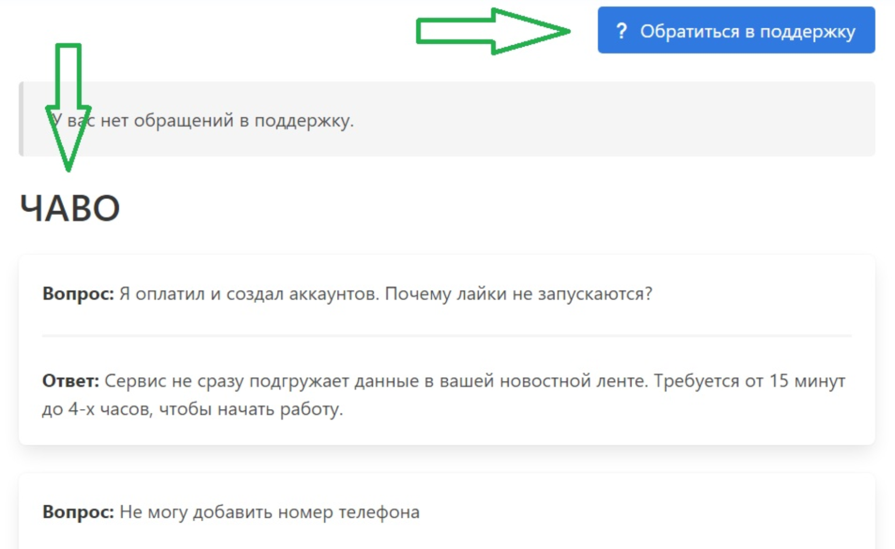

SOC
POWER
ПОШАГОВАЯ ИНСТРУКЦИЯ
Как подключиться к «socpower»?
Приветствуем вас, если вы здесь, значит вы цените своё время, свои деньги и свои нервы, и абсолютно не хотите получить «головняк» от общения с фрилансерами-таргетологами, и модерацией ВКонтакте, которая не пропускает 70% объявлений на своей маркет-платформе.
Сейчас мы подробно объясним, как правильно подключиться к нашему сервису, какие возможности у него есть, и дадим пару советов по работе с ним, чтобы получить «ощутимый» результат как у наших активных пользователей.
Для начала вам необходимо перейти на наш официальный сайт — https://socpower.ru/. Сам ВКонтакте его внес в список «нежелательных», ведь он не любит терять деньги, которые можно заработать на своих пользователях.
Для обхода, мы сделали ссылку на зеркало, таким образом вы с легкостью через пару секунд окажетесь на главной странице — https://anonymz.com/?https://socpower.ru.
Данная ссылка с редиректом прикреплена в нашем официальном сообществе https://vk.com/socpowerclub.
РЕГИСТРАЦИЯ
После того, как вы ознакомились с главной страницей нашего сайта, походили по разделам, нажимаете кнопку «регистрация» и у вас откроется вот это окно:
ЛИЧНЫЙ КАБИНЕТ
После того, как вы посмотрели приветственное видео, ознакомились с другими материалами, и инструкциями, разберемся с тем, что находится еще в личном кабинете.
Кликаем по кнопке справа, в верхнем углу, где ваш логин — электронная почта, и у вас откроется меню, в котором будут «Настройки», «Партнерская программа», «Пополнение баланса», «Помощь» и «Выход» из socpower-аккаунта.
Нажимаем пополнение баланса, и у вас открывается окно, в котором можно выбрать любой удобный или доступный вариант оплаты, а также отслеживать статистику пополнений/списаний с баланса сервисом внизу, под зелеными блоками:
В разделе партнерской программы, вы найдете счетчики количества ваших партнеров на разных уровнях, по принципу «друг позвал друга, а тот позвал своего друга».
Разумеется вознаграждение разное, за разные уровни, таким образом один из наших постоянных пользователей зафиксировал за последний месяц (март-апрель) более 5000₽ пассивного дохода.
При работе с партнерской ссылкой, и при нажатии на первую кнопку со значком гиперссылки, вы получите второй вариант ссылки, более длинный, или можете пользоваться коротким вариантом.
Это экономит ваше время на поиске сокращателя ссылок. Вторая кнопка обновляет вашу короткую ссылку, если вдруг первая «бьется» и не открывается.
Условия по выплатам по программе очень простые, и работают не от пополнений ваших приглашенных друзей, а от расходов на функции сервиса, то есть вы получаете на дистанции постоянно прибавляющийся доход.
В следующем разделе настройки, которые очень простые, в первой вкладке работа с уведомлениями, выбираете по СМС или на электронную почту, или вовсе отключаете.
Во второй вкладке настройка пароля, который можно поменять.
В разделе помощи, вы сможете задать свой вопрос, НО настоятельно рекомендуем ознакомиться уже с имеющимися решенными вопросами, и частыми вопросами, которые там же есть, но надо полистать — вдруг найдете ответ сразу.
Как подключить аккаунт ВКонтакте?
В левом верхнем углу у вас есть вот такая кнопка, нажав на нее, у вас откроется два варианта авторизации вашего аккаунта:
Лучше всего авторизовываться по логину, так как не будет ограничения на отправку сообщений, что немаловажно использовать как приветственное сообщение в «личку» заинтересовавшемуся пользователю, которого вы лайкнули, просмотрели историю или поздравили с днем рождения.
Важно: socpower не собирает и не хранит ваши данные при авторизации, он работает в рамках закона, и мы сделали все возможное, чтобы сервис приносил вам результаты и радовал стабильностью. Напомним, мы работаем уже более 4 лет, и несем юридическую ответственность, как и вы.
Готово! После того, как вы добавили свой первый аккаунт ВКонтакте, можете приступать к его настройкам.
Следите за статистикой, экспериментируйте с различными функциями, и вы заметите, что через месяц к вам начнут «переходить» новые пользователи.
Важно: socpower не банальный сервис накрутки подписчиков-ботов, поэтому прежде, чем вы решите начать пользоваться — ознакомьтесь с функционалом, с результатами, и функциями, которые в нем есть.
Мы не накручиваем ничего, ваш привязанный аккаунт вместо вас (имитирует действия) заходит на чужие публикации, лайкает их, смотрит истории, и поздравляет с днем рождения, отправляя сообщение, обратившись по имени, при этом текст сообщения можно сделать вариативным и гибким, двумя словами — привлекает внимание.
Обо всех его функциях мы подробно расскажем в других статьях, а пока подписывайтесь на наше сообщество, чтобы не потерять — сохраняйте материал в закладках, и ждите новых публикаций.
Один раз настроили — каждый день получаете «на автомате» результат. Вы заметите, что и таргет не потребуется.
С уважением,
Команда SOCPOWER.